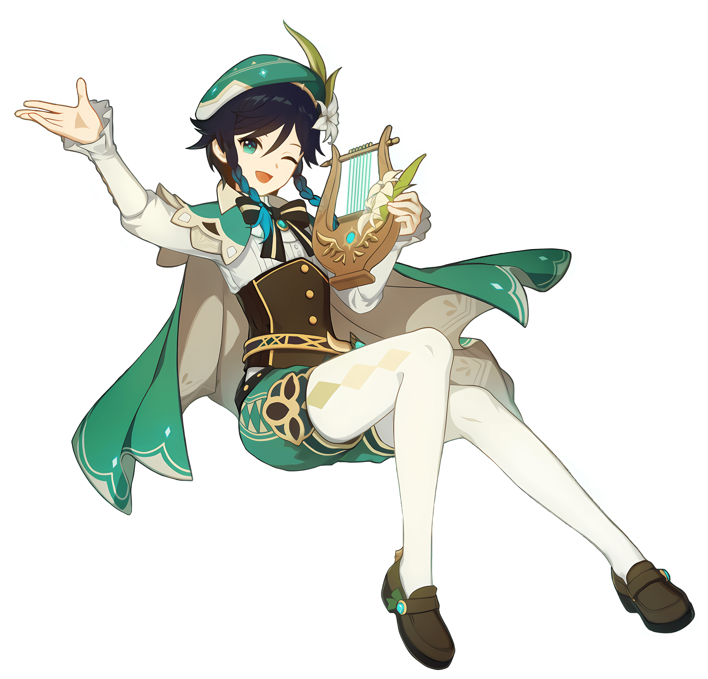
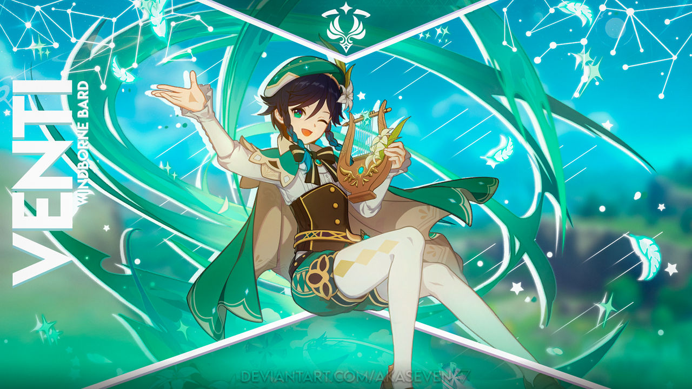
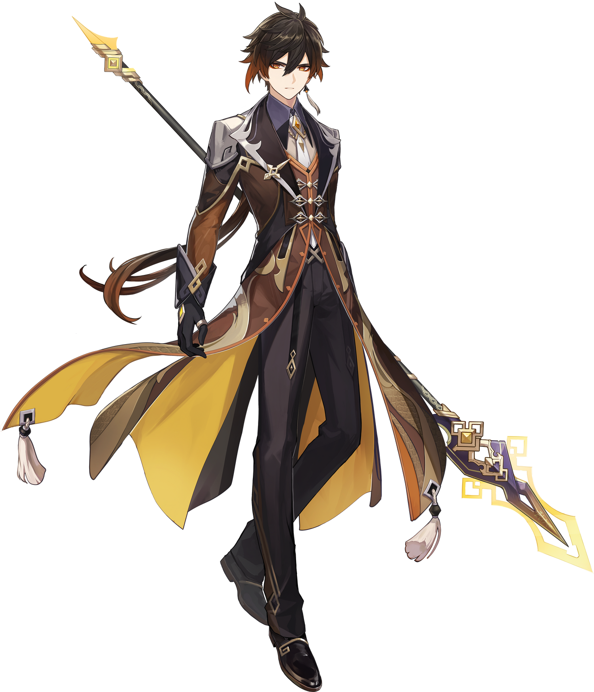
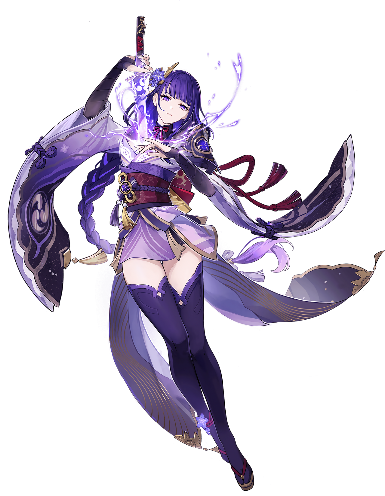
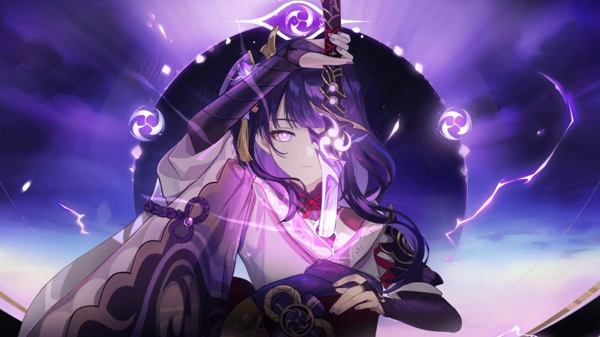
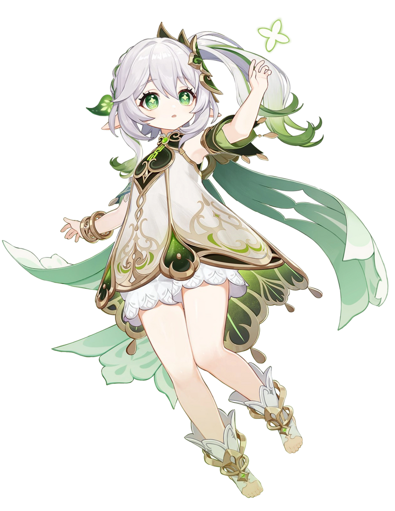
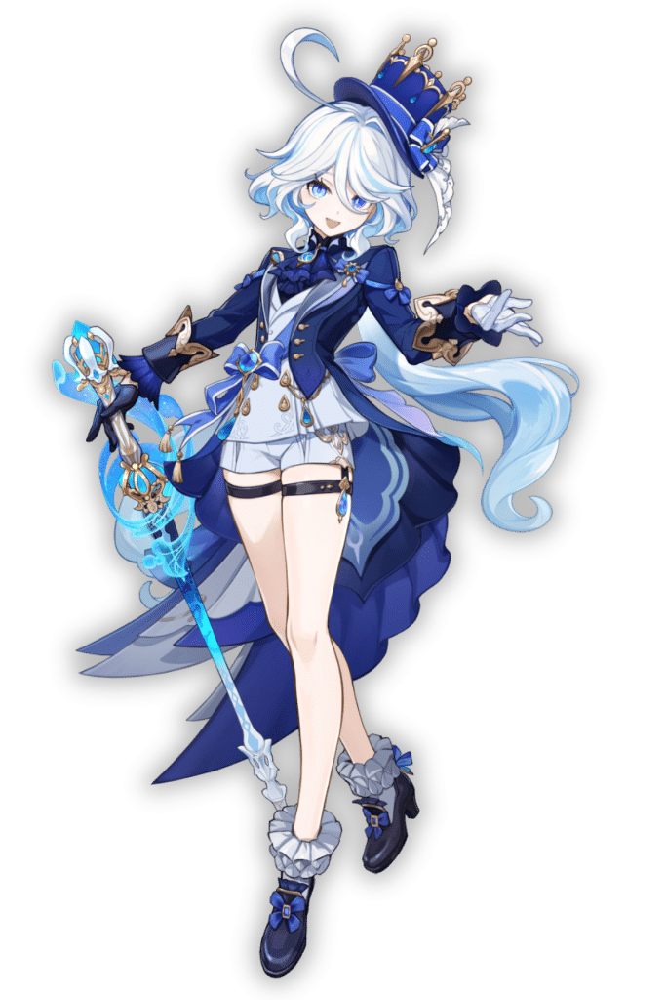
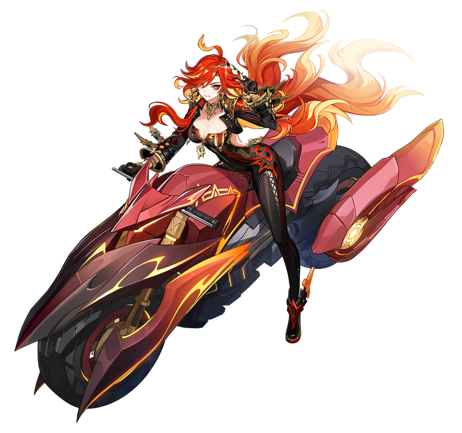
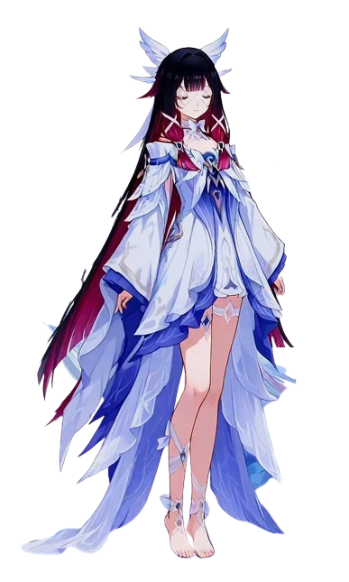
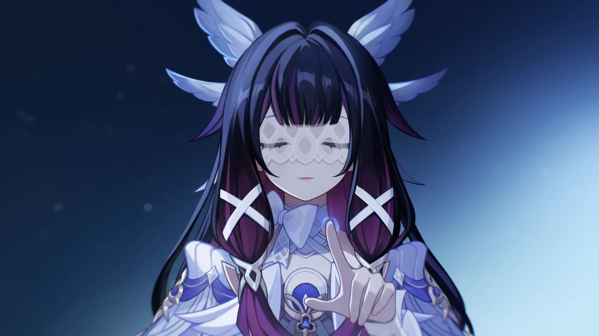

Venti
ABOUT
The Anemo Archon Barbatos, taking the form of a bard named Venti. He is one of The Seven who presides over Mondstadt, the City of Freedom. Despite being a god, Venti values freedom above all and chooses to live among mortals, strumming his lyre and enjoying dandelion wine. His carefree demeanor hides millennia of wisdom and his unwavering dedication to protecting the freedom of Mondstadt's people.


Zhongli
ABOUT
The Geo Archon Rex Lapis, now living as the consultant Zhongli. As the oldest of The Seven, he has witnessed over six thousand years of history. Known as the God of Contracts, Zhongli built Liyue on principles of order and agreements. Though he has relinquished his divine duties, his wisdom, elegance, and mastery over Geo remain unmatched. He embodies the stability and endurance of stone itself.


Raiden
ABOUT
The Electro Archon Ei, ruling Inazuma through her puppet, the Raiden Shogun. Obsessed with pursuing eternity after losing her twin sister Makoto, she seeks to freeze Inazuma in an unchanging state. Her mastery of Electro is absolute, capable of splitting islands with a single strike. Though initially isolated in the Plane of Euthymia, she learns that true eternity lies in cherished moments, not stagnation.


Nahida
ABOUT
The Dendro Archon Lesser Lord Kusanali, successor to Greater Lord Rukkhadevata. Despite her small stature and 500 years of imprisonment by the Akademiya, Nahida possesses profound wisdom and connection to all of Sumeru through Irminsul. She can enter dreams and link consciousness across vast distances. Her gentle nature and desire to help others reflects her understanding that true wisdom comes from empathy and learning from mistakes.


Furina
ABOUT
The former Hydro Archon who performed the greatest act in Fontaine's history. For 500 years, Furina maintained the facade of being a god while being entirely human, enduring crushing loneliness to save her people from a prophecy of doom. Her theatrical personality masked deep pain and determination. Though she lost her divinity when Focalors sacrificed herself, Furina's courage and sacrifice proved that humanity can be just as heroic as any god.


Mavuika
ABOUT
The Pyro Archon who leads Natlan in its eternal struggle against the Abyss. As the God of War, Mavuika embodies both the destructive fury and protective warmth of fire. She unites the six tribes of Natlan, inspiring warriors to fight with honor and courage. Her leadership style is direct and passionate, believing that war tests the strength of both body and spirit. She stands at the frontlines, her flames burning as bright as the sacred fire that never dies.


Kuutar
ABOUT
Columbina is the enigmatic Third of the Eleven Fatui Harbingers, known for her angelic appearance and mysterious nature. With her eyes perpetually closed and a voice that echoes with otherworldly beauty, she carries secrets that even her fellow Harbingers fear to uncover.